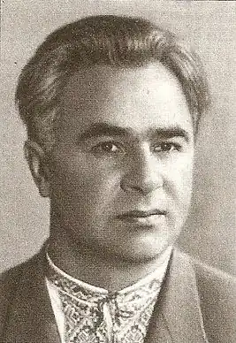

Анатолій Шиян
Народився Анатолій Іванович Шиян 5 квітня 1906р. в українській слободі Борисівці на Білгородщині у родині селянина-маляра.
Рідна слобода стала прообразом селищ, у яких розгорталися головні події творів письменника, — від ранніх оповідань, першої повісті "Баланда" (1930), де показане велике селище Слобода, і до роману "Гроза" (1936), який розповідає в основному про слободу Борисівку. Як пізніше згадуватиме сам письменник, малярство було успадкованим ще від діда-прадіда заняттям їхнього роду, малярували батько та його брати. Це ніби зумовлювало шанобливе ставлення майбутнього митця до краси, вчило по-своєму бачити і розуміти її, відтворювати для інших. Мальовничі краєвиди Борисівки, привілля навколишніх степів, задумливий ліс чарували душу юного Анатолія. Не випадково 1925p. він вступає до Київського лісотехнічного інституту. Хоча молодий А. Шиян спершу й віддав перевагу лісництву, але вже в студентські роки літературне покликання настійно захоплює його. Ще під час навчання в лісотехнічному інституті (який він успішно закінчив у 1929 році), юнак дедалі активніше включається в літературне життя: входить до київської групи "Молодняк", запально відстоює молодняківські позиції в гарячих творчих дискусіях того часу, робить перші спроби писати. В квітневому номері за 1928р. журнал "Молодий більшовик" друкує перше оповідання А. Шияна — "Лісокради". З кінця 20-х років починається інтенсивне входження А. Шияна в літературу. В періодиці одне за одним публікуються його оповідання. Протягом 1930 — 1932 pp. побачило світ шість оригінальних збірок нарисів, оповідань, повістей. Одним з примітних ранніх оповідань є "Імандра" (1930). Певним кроком у творчому самоутвердженні А. Шияна була перша повість "Баланда" (1930), яка 1957p. була опублікована в новому, істотно доопрацьованому варіанті. Письменник продовжує творчі пошуки і в першому своєму романі "Магістраль" (1934), звертаючись до нової для себе (немало в чому і для всієї літератури) теми виробництва. 1936р. вийшов роман "Гроза", число видань якого перевершило два з половиною десятки. Готуючи роман до одного з численних перевидань, письменник у 1954 році здійснює нову редакцію його тексту, зробивши суттєві виправлення та уточнення. Притаманне письменникові вміння віднайти яскраву художню деталь, колоритно подати ту чи іншу картинку живої дійсності, глибока повага та увага до багатющого арсеналу фольклорної поетики, особливо пісенної, проявились в кращій з повістей А. Шияна — "Мар'яна" (1953). Звертався А. Шиян і до драматичного жанру (п'єси "Дружба", "Коні", 1933). Проте помітного успіху він тут досягне вже значно пізніше: в 50 — 60-і роки, коли вийдуть його історична драма про боротьбу козаків за волю і незалежність рідного краю під проводом легендарного отамана війська Запорозького Івана Сірка — "Де тирса шуміла" (1961), особливо ж — п'єси-казки для дітей "Івасик-Телесик", "Котигорошко", "Іван-мужицький син", "Летючий корабель" та ін. У роки Великої Вітчизняної А. Шияна направляють у фронтову пресу. Спершу — військовим кореспондентом газети "Советская Армия", а з липня 1941-го — в щойно створену фронтову газету "За Радянську Україну", очолену М. Бажаном. У січні 1943-го А. Шияна переводять до Українського штабу партизанського руху, а в травні відряджають на кілька місяців у тил ворога — до партизанського з'єднання О. Сабурова. Після повернення з ворожого тилу він завідує партизанським відділом газети "Радянська Україна". Фронтові кореспонденції А. Шияна, його пристрасна публіцистика, оповідання друкувалися в армійських і центральних газетах, звучали по радіо, виходили окремими книжками — "Розплата" (1941), "Не здаюсь!", "Землею рідною" (1942). Правдивим художнім документом про боротьбу наших патріотів у ворожому тилу була й видана невдовзі по війні документально-нарисова книжка "Партизанський край" (1946). Важко переоцінити те значення для подальшої творчої роботи письменника, яке мало особисто пройдене, пережите, бачене і почуте ним на фронті, в нашому і ворожому тилу — в партизанських загонах, на щойно звільнених від окупантів землях. Це і склало основу найбільшого за обсягом роману "Хуртовина" (1979 — 1980), який 1980р. було відзначено літературною премією імені Андрія Головка. В творчому доробку А. Шияна понад двадцять оригінальних книжок оповідань, повістей, нарисів. Він автор багатьох драматичних творів. Але найповніше і найбільш виразно його самобутній талант проявився в романах "Гроза" і "Хуртовина", що стали вершинами в творчості письменника.